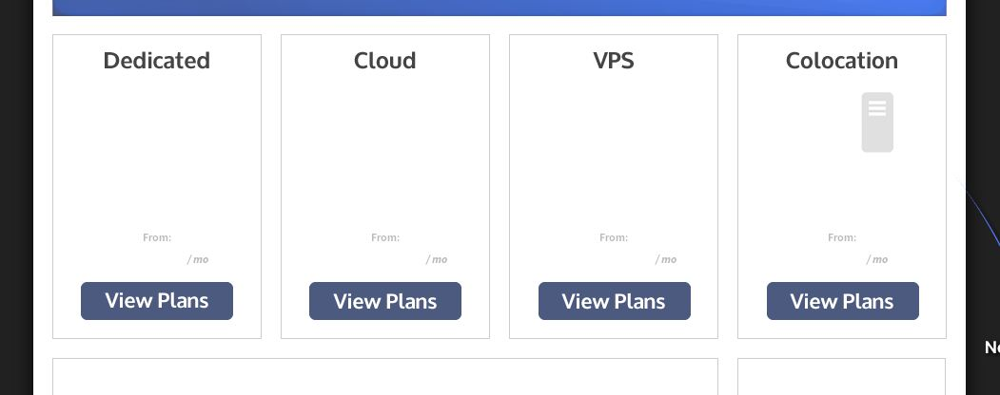
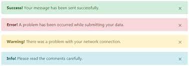

Como falei no início, infelizmente não explorei tanto o bootstrap... Porém, aqui estão duas ferramentas novas que eu achei.
Gutter são +ou- os gaps, estou utilizando ela agora para organizar melhor a página.
Os alertas como o nome diz, servem para alertar. Nos sites de sinopses isso é ótimo, já que assim posso avisar que tem spoiler kakkaa.
